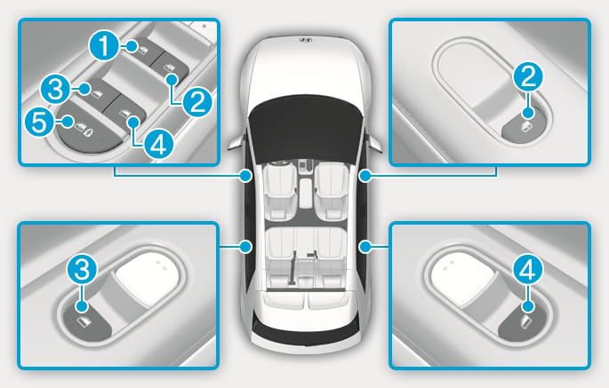

유리창 열림/닫힘 장치
유리창 열림/닫힘 장치의 위치와 명칭을 확인하십시오.

2C_WindowOpenClose
- 운전석 유리창 열림/닫힘 스위치
- 동승석 유리창 열림/닫힘 스위치
- 뒷좌석(좌측) 유리창 열림/닫힘 스위치
- 뒷좌석(우측) 유리창 열림/닫힘 스위치
- 유리창 열림/닫힘 잠금 버튼
-
주행 중 열린 유리창 사이로 얼굴이나 손을 내밀지 마십시오.
-
유리창을 닫을 때 탑승자의 얼굴, 팔, 손 등 신체 일부 또는 그 밖의 장애물이 닫히는 유리창에 끼일 우려가 없는지 확인하십시오.